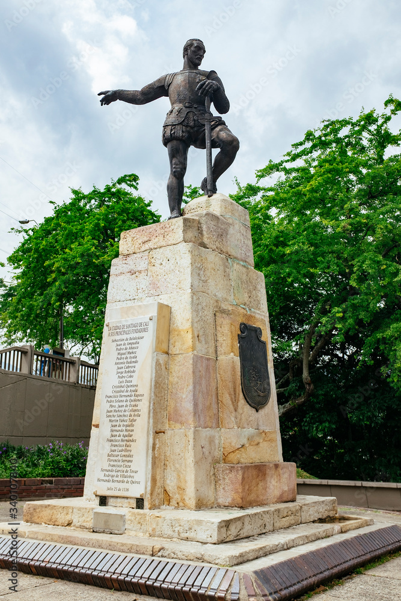
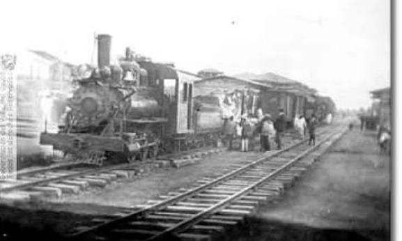
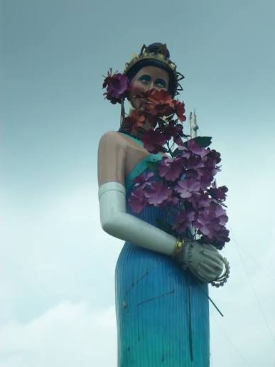

Fundada el 25 de julio de 1536 por Sebastián de Belalcázar, Cali es una de las ciudades más antiguas de Colombia y de América.

Llegan las primeras locomotoras desde Buenaventura, conectando la región con los mercados internacionales e impulsando su comercio y modernización.

Por el mismo puerto entraron discos de vinilo con géneros caribeños y pachanga que la comunidad adoptó con fervor, haciendo de la salsa su mayor distintivo cultural.
Nacida en un municipio vecino, se volvió un mito urbano a mediados del siglo XX. Mujer humilde, vestía trajes despampanantes, coronas, guantes largos y joyas de fantasía, y se autoproclamó soberana de la ciudad. Cali la adoptó: clubes sociales, el pueblo y hasta presidentes la recibían con honores reales.
Representa la hospitalidad, la alegría, la teatralidad cotidiana y la capacidad caleña de transformar la excentricidad en arte y orgullo.

Voseo: uso del «vos». Jejeo: la «s» final o entre vocales suena parecida a «j». El «Oís»: muletilla de «oíste» para llamar la atención.
Chuspa: bolsa de plástico. Borondo: paseo corto sin rumbo. Pingo: tonto o distraído (a veces con cariño). Acoitrar: sentir pereza. Chontaduro: fruta tropical afrodisíaca. Viche: bebida artesanal de caña, herencia del Pacífico.
«Cali es Cali, lo demás es loma»: el orgullo local por su planicie urbana frente al resto del país.